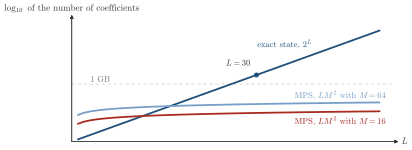
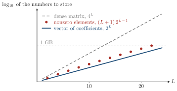

Advanced Quantum Materials 2027 · All lectures · Lecture notes
Session 7. Quantum Many-Body Entanglement and Tensor Networks
7.3 Storing the wave function as the main bottleneck
Now that we use the language of spins, let us ask why a general interacting many-body Hamiltonian is hard to solve. A first answer would be that the diagonalization of a huge matrix is slow. The main problem is more basic, and it is the storage of the wave function.
Let us take the simplest nontrivial case, which is the antiferromagnetic Heisenberg dimer of Section 6.8, \(H = \mathbf{S}_0\cdot \mathbf{S}_1\) on two spin-1/2 sites. Its ground state is the unique singlet,
\[|\Psi\rangle = \frac{1}{\sqrt{2}}\left(|{\uparrow\downarrow}\rangle - |{\downarrow\uparrow}\rangle\right), \tag{7.3}\]
which is a state that does not break any symmetry, since the expectation value of every single-site spin vanishes. As we will show below, it is also maximally entangled. The question of the whole session is how this kind of state generalizes to a macroscopic system with many sites.
Let us write a general spin-1/2 wave function in the natural product basis, with one up or down label \(s_i\) per site.
\[|\Psi\rangle = \sum_{s_1,\dots,s_L} C(s_1,\dots,s_L)\, |s_1,\dots,s_L\rangle, \qquad s_i \in \{\uparrow,\downarrow\}. \tag{7.4}\]
For \(L=2\) there are four basis states, up-up, up-down, down-up and down-down, so there are four coefficients \(C\), and the Hamiltonian is a \(4\times4\) matrix. If we add one site, \(L=3\), the number doubles to eight. If we add one more site, \(L=4\), it doubles again to sixteen. In general, the dimension of the Hilbert space is \(d = 2^L\), and this is also the number of coefficients \(C(s_1,\dots,s_L)\) that we need to write the ground state exactly. This exponential growth is the main limitation. We may never build the full \(2^L\times2^L\) Hamiltonian matrix, and compute its matrix elements only when we need them. Still, once we have found the ground state, we have to store its \(2^L\) coefficients. This storage cost, and not the cost of the diagonalization, is the real obstruction, and it is the most important point of the whole session. Tensor networks are one answer to this storage problem. A second answer comes from machine learning, and it is neural network quantum states, which we will study in Session 10. In this session we only develop the first answer, tensor networks, and in particular matrix product states.


We store the exact ground state of \(L=40\) spin-1/2 sites as complex numbers of 16 bytes each. What memory do we need?
Show the answers
- A. ✓ True
This is true. The number of coefficients is \(2^{40}\approx1.1\times10^{12}\) and each one takes 16 bytes. This is already far above the memory of a computer, and ten more sites would multiply it by one thousand.
- B. ✗ False
This is false. The value \(2^{30}\approx10^9\) is the one for a chain of 30 sites, which does need \(1.7\times10^{10}\) bytes. For \(L=40\) the number is \(2^{40}\approx10^{12}\), a thousand times more.
- C. ✗ False
This is false. This would be the storage of a product state, one 16-byte number per site. Already for \(L=2\) the singlet has two nonzero coefficients that cannot be written as a product of two single-site states.
We add one more spin-1/2 site to the chain. How does the storage of the exact state (7.4) change?
Show the answers
- A. ✗ False
This is false. Going from \(L=2\) to \(L=3\) adds 4 coefficients, from \(L=3\) to \(L=4\) adds 8, and from \(L=10\) to \(L=11\) adds 1024. The increase is not fixed.
- B. ✗ False
This is false. From \(L=2\) to \(L=3\) the number of coefficients goes from 4 to 8, and this is a factor 2 and not 3. The factor is 2 for every \(L\).
- C. ✓ True
This is true. Each new site doubles the dimension of the Hilbert space, so \(2^L\) becomes \(2^{L+1}\). This is the exponential wall, and the MPS ansatz replaces it with a growth that is linear in \(L\).
Notebook check-in: session7.ipynb, “Energy of the Heisenberg model as a function of the system size” (Core)
In this exercise you compute the ground-state energy per site of the Heisenberg chain with exact diagonalization, for growing system sizes. For this you use the dmrgpy library, which is new in this session, together with pyqula. You will see how fast exact diagonalization stops being possible, and this limit is the \(2^L\) scaling of (7.4) in a concrete calculation.
Try it. Increase the sizes in the list Ns and plot the energy per site. For \(J=1\) it should approach the value \(1/4-\ln 2\approx-0.443\) of the infinite chain. At which size does the calculation become slow, and how does this compare with the \(2^L\) of (7.4)?
- In Section 7.5 the singlet (7.3) is our first example of an entangled state, with the entropy \(\log 2\).
- In Section 8.3 the same singlet is the ground state of the Heisenberg dimer (8.2) and the starting point of quantum spin liquids.
- In Section 10.3 the same table of \(2^L\) coefficients is replaced by a neural network that gives each coefficient on demand.